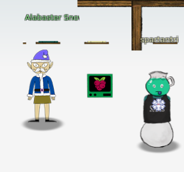
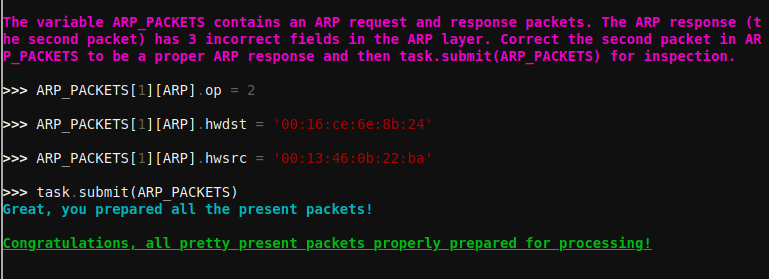

Scapy Prepper
This challenge teaches the use of scapy to manipulate packets and it gives some hints for challenge 9 ARP Shenanigans.
╔════════════════════════════════════════════════════════════════╗
║ ___ ___ ___ ___ ___ _ _ _____ ___ _ ___ _ _____ _____ ║
║ | _ \ _ \ __/ __| __| \| |_ _| | _ \/_\ / __| |/ / __|_ _| ║
║ | _/ / _|\__ \ _|| .` | | | | _/ _ \ (__| ' <| _| | | ║
║ |_| |_|_\___|___/___|_|\_| |_| |_|/_/ \_\___|_|\_\___| |_| ║
║ ___ ║
║ | _ \_ _ ___ _ __ _ __ ___ _ _ ║
║ | _/ '_/ -_) '_ \ '_ \/ -_) '_| ║
║ |_| |_| \___| .__/ .__/\___|_| ║
║ |_| |_| ║
║ (Packets prepared with scapy) ║
╚════════════════════════════════════════════════════════════════╝
Type "yes" to begin.

Solution
Q1
Q1 : Welcome to the "Present Packet Prepper" interface! The North Pole could use your help preparing present packets for shipment. Start by running the task.submit() function passing in a string argument of 'start'. Type task.help() for help on this question. => task.submit("start")
Q2
Q2 : Submit the class object of the scapy module that sends packets at layer 3 of the OSI model. => task.submit(send)
Q3
Q3 : Submit the class object of the scapy module that sniffs network packets and returns those packets in a list. => task.submit(sniff)
Q4
Q4 : Submit the NUMBER only from the choices below that would successfully send a TCP packet and then return the first sniffed response packet to be stored in a variable named "pkt": 1. pkt = sr1(IP(dst="127.0.0.1")/TCP(dport=20)) 2. pkt = sniff(IP(dst="127.0.0.1")/TCP(dport=20)) 3. pkt = sendp(IP(dst="127.0.0.1")/TCP(dport=20)) => task.submit(1)
Q5
Q5 : Submit the class object of the scapy module that can read pcap or pcapng files and return a list of packets. => task.submit(rdpcap)
Q6
Q6 : The variable UDP_PACKETS contains a list of UDP packets. Submit the NUMBER only from the choices below that correctly prints a summary of UDP_PACKETS: 1. UDP_PACKETS.print() 2. UDP_PACKETS.show() 3. UDP_PACKETS.list() => task.submit(2)
Q7
Q7 : Submit only the first packet found in UDP_PACKETS. => task.submit(UDP_PACKETS[0])
Q8
Q8 : Submit only the entire TCP layer of the second packet in TCP_PACKETS. => task.submit(TCP_PACKETS[IP][1][TCP])
Q9
Q9 : Change the source IP address of the first packet found in UDP_PACKETS to 127.0.0.1 and then submit this modified packet => task.submit(UDP_PACKETS[0]) worked but shouldn't have ^^
Q10
Q10 : Submit the password "task.submit('elf_password')" of the user alabaster as found in the packet list TCP_PACKETS. => TCP_PACKETS[6][Raw].load => task.submit('echo')
Q11
Q11 : The ICMP_PACKETS variable contains a packet list of several icmp echo-request and icmp echo-reply packets. Submit only the ICMP chksum value from the second packet in the ICMP_PACKETS list. => task.submit(ICMP_PACKETS[1][ICMP].chksum)
Q12
Q12 : Submit the number of the choice below that would correctly create a ICMP echo request packet with a destination IP of 127.0.0.1 stored in the variable named "pkt" 1. pkt = Ether(src='127.0.0.1')/ICMP(type="echo-request") 2. pkt = IP(src='127.0.0.1')/ICMP(type="echo-reply") 3. pkt = IP(dst='127.0.0.1')/ICMP(type="echo-request") => task.submit(3)
Q13
Q13 : Create and then submit a UDP packet with a dport of 5000 and a dst IP of 127.127.127.127. (all other packet attributes can be unspecified) => task.submit(IP(dst='127.127.127.127')/UDP(dport=5000))
Q14
Q14 : Create and then submit a UDP packet with a dport of 53, a dst IP of 127.2.3.4, and is a DNS query with a qname of "elveslove.santa". (all other packet attributes can be unspecified) => task.submit(IP(dst='127.2.3.4')/UDP(dport=53)/DNS(rd=1,qd=DNSQR(qname="elveslove.santa")))
Q15
Q15 : The variable ARP_PACKETS contains an ARP request and response packets. The ARP response (the second packet) has 3 incorrect fields in the ARP layer. Correct the second packet in ARP_PACKETS to be a proper ARP response and then task.submit(ARP_PACKETS) for inspection. => ARP_PACKETS[1][ARP].op = 2 => ARP_PACKETS[1][ARP].hwdst = '00:16:ce:6e:8b:24' => ARP_PACKETS[1][ARP].hwsrc = '00:13:46:0b:22:ba' => task.submit(ARP_PACKETS)
